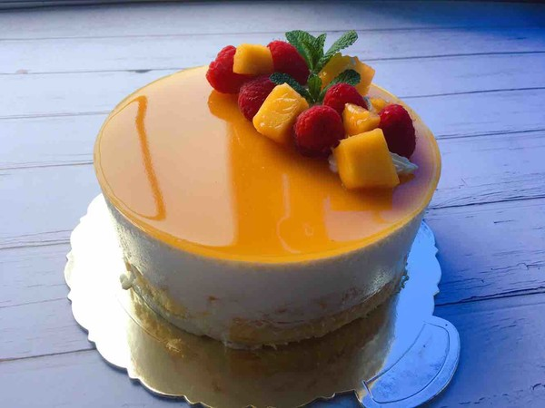

Mousse

Description
this raspberry mousse every year when raspberries are in season. You
want to use ripe and sweet berries. Adjust sugar amount accordingly.
- 18 ounces fresh raspberries
- 7 tablespoons confectioners' sugar, or more as needed
- 4 tablespoons orange juice
- 1 (.25 ounce) package unflavored gelatin
- 1 ¾ cups heavy cream
- 2 tablespoons vanilla sugar
- 1 dash lemon juice
-
Set a few raspberries aside for garnish. Combine remaining
raspberries and confectioners' sugar in a bowl, mix, and set
aside for 30 minutes. Pass raspberries through a sieve to strain
out seeds. Discard seeds.
-
Pour orange juice into a small saucepan and sprinkle gelatin on
top. Set aside for 1 minute. Heat over low temperature without
boiling until gelatin is fully dissolved, about 3 minutes.
-
Remove from stove, allow to cool slightly and mix with raspberry
puree.
-
Beat cream in a chilled glass or metal bowl using an electric
mixer until frothy. Add vanilla sugar gradually, continuing to
beat until soft peaks form. Fold whipped cream into raspberry
puree. Stir in lemon juice and sweeten with more confectioners'
sugar if desired. Cover and refrigerate for 2 hours. Garnish
with raspberries.